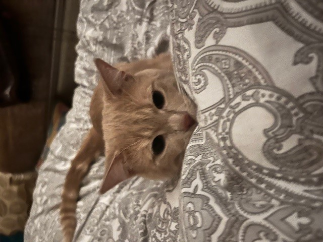

Curriculum Vitae
Informations Personnelles
- Nom : Adlane
- Prénom : Faïrouz
- Date de Naissance : 02 août 2004 (19 ans)
- Adressse: Boulevard Léopold III, 6
- GSM : 0484 77 32 44
- fairouz.adlane@isfsc.be
Formations
- 2010-2016 : Athénée Royale Verwée, Schaerbeek, Obtention du C.E.B -Juin 2016
- 2016-2022 : Athénée Fernand Blum, Schaerbeek, Obtention du C.E.1.D - Juin 2018, Obtention du C.E.S.S - Juin 2022
- 2022 : Obtention du C.E.S.S - Juin 2022
- 2022-2023 : Haute Ecole ISFSC, Schaerbeek - EMU BAC1
- 2023-2024 : Haute Ecole ISFSC, Schaerbeek - EMU BAC2
Expériences Professionnelles -j'ai pas d'xp
- Avril 2016 - Présent : Développeur Front-End, Société TechVision, Bruxelles
- Conception et développement d'interfaces utilisateur pour des applications web et mobiles en utilisant HTML, CSS et JavaScript.
- Collaboration étroite avec les designers pour transformer des maquettes en interfaces interactives et conviviales.
- Expérience dans la mise en œuvre de projets Agile, avec des sprints et des réunions de planification et de rétrospective.
- Utilisation de frameworks tels que React et Vue.js pour créer des expériences utilisateur dynamiques et réactives.
- Intégration de services RESTful et utilisation de Git pour le contrôle de version.
- Juin 2015 - Mars 2016 : Stagiaire en Développement Web, Startup WebCraft, Liège
- Assistance dans la création d'une application web responsive utilisant les dernières technologies front-end.
- Participation à l'optimisation des performances du site et à l'assurance de sa compatibilité avec différents navigateurs.
- Contribution à la mise en place d'une méthodologie de développement Agile au sein de l'équipe.
Compétences
Langues
- Français (courant),
- Anglais (avancé),
- Arabe (courant)
- Espagnol (novice)
Centres d'Intérêt
- jouer avec mon chat
- voyager
- regarder des séries
- lecture de manga
